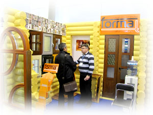

Вид из окна - очень важный элемент интерьера.
Самое главное правильно выбрать раму.
Компания «Окна Формат» занимается производством, реализацией и монтажом деревянных светопрозрачных ограждающих конструкций различной конфигурации и сложности с 2005 года. За семь прошедших лет наши сотрудники помогли множеству людей с наибольшей выгодой принести уют и комфорт в загородные дома и квартиры, реализовать идеи и воплотить мечты.
Компания «Окна Формат» это
высококвалифицированные специалисты, которые «набили руку» на «Грановитой палате» (Москва, Кремль), «Академия балета им. Вагановой» (Санкт-Петербург), Комплекс НовоИерусалимского монастыря (Истра) и многих других престижных объектах. На сегодняшний день этот опыт позволяет нам реализовать практически любые мечты и пожелания наших Заказчиков, производить и монтировать оконные конструкций любого уровня сложности в кратчайшие сроки по минимальным ценам. Мы поможем вам не только сделать ваш дом комфортным и теплым, но и с помощью оригинального дизайна окон разнообразить интерьер и придать помещениям дополнительный уют.
Зимние сады. Многолетний опыт, приобретенный сотрудниками компании «Окна Формат» в области разработки и монтажа индивидуальных проектов зимних садов для наших клиентов, позволяет в кратчайшие сроки создать сложнейшие, но в то же время надежнейшие конструкции, которые выдерживают высочайшие механические нагрузки и способны сохранять заданные качественные характеристики в широком диапазоне температур.
Алюминиевые конструкции из профиля NEW TEC. Алюминий – металл, отличающийся крайней легкостью при достаточно высокой прочности, что обуславливает его активное использование в остеклении. Алюминиевые конструкции широко используются компанией «Окна Формат» при реализации проектов по остеклению любой сложности. Возможность применения алюминиевого профиля холодной и теплой серии позволяет в кратчайшие сроки реализовать ваши самые смелые мечты.
Качественная фурнитура марки «Maco» и «Poto-Nt» подходит для оконных конструкций любого размера и формы, отличается простотой сборки и удобством эксплуатации и позволяет создавать надежно запирающиеся по всему периметру окна, чтобы помочь вам обеспечить максимальную безопасность помещения.
Доставка и монтажные работы любого уровня сложности.
Основные преимущества работы с компанией «Окна Формат»: